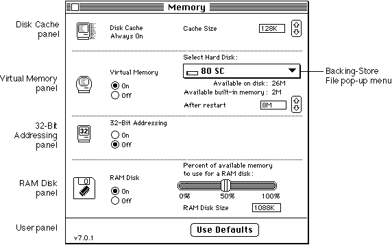

Legacy Document
Important: The information in this document is obsolete and should not be used for new development.
Important: The information in this document is obsolete and should not be used for new development.


The Memory Control Panel
A user can alter several aspects of the system memory configuration by setting certain controls in the Memory control panel. This panel contains controls governing the operation of the disk cache, virtual memory, and the addressing mode used by the Memory Manager. Figure 4-1 shows the Memory control panel.Figure 4-1 The Memory control panel
 The Disk Cache panel replaces the HFS RAM Cache panel (part of the General control panel) used in earlier versions of system software. A disk cache is a part of RAM that acts as an intermediate buffer when data is read from and written to file systems on secondary storage devices. Data is saved there in case it is needed again in the very near future. If it is, the Operating System reads the data from the disk cache rather than the secondary storage device (which would take considerably longer). By increasing the cache size, the user increases the likelihood that data recently read from or written to the file system will be in the cache. The controls in the Disk Cache panel allow the user to configure the size of the disk cache used by the Operating System during file-access operations. In system software version 7.0, unlike earlier versions, the user cannot turn off disk caching.
In system software version 7.0, the minimum cache size is 16 KB. The default size is
32 KB per megabyte of installed RAM (thus, the default disk cache size for a computer with 4 MB of RAM is 128 KB). The maximum disk cache size is 320 KB per megabyte of installed RAM (thus, the maximum disk cache size for a computer with 4 MB of RAM is 1280 KB). The operation of the disk cache is completely transparent to your application.
The Virtual Memory panel allows the user to set various features of virtual memory, including whether virtual memory is turned on and, if so, how much is available. The user can also specify the volume of the backing-store file, in which the Virtual Memory Manager stores unused portions of code and data. Changes to the virtual memory configuration do not take effect until the user restarts the computer. Note that the Virtual Memory panel appears only on computers that support virtual memory. For information on how your application can interact with virtual memory, see the chapter "Virtual Memory Manager" in this book.
- Note
- These cache size values are provided for informational purposes only and may differ in later system software versions or on different Macintosh computers. In addition, the use of RAM for a RAM-based video interface or a RAM disk affects the amount of RAM available for the disk cache.

Using the 32-Bit Addressing controls, the user can select the maximum size of the address space used in the computer. The maximum size of the address space is determined by the number of bits used to store memory addresses, as explained in the chapter "Virtual Memory Manager" in this book. The 32-Bit Addressing panel appears only on computers that support 32-bit addressing mode. By clicking the panel's controls, the user can turn 32-bit addressing off and on. Changes made in this panel do not go into effect until the user restarts the computer.
Using the RAM Disk controls, the user can determine the amount of the available RAM that is to be treated as a RAM disk, a portion of RAM reserved for use as a temporary storage device. It is most useful to create a RAM disk on battery-powered computers (such as the Macintosh PowerBook computers) because the computer uses less energy to access RAM than to access a hard disk or a floppy disk.